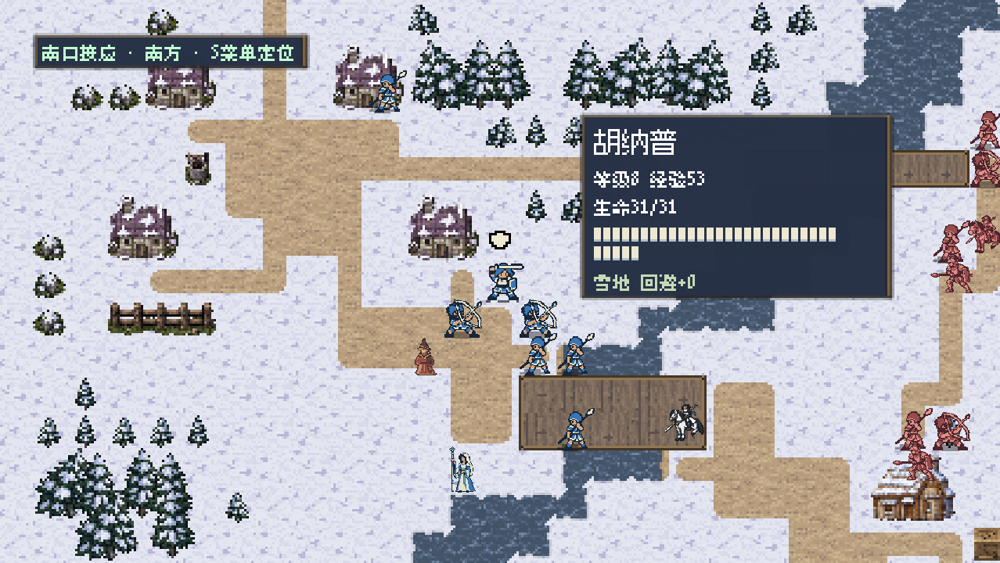
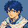
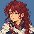

THE WESTERN CONTINENTPC BUILD · IN-GAME CAPTUREPC


Separated as children.Reunited on opposite sides.
01 — THE STORY
Your victory.
Her catastrophe.
He fights for his brother.
She sails for her mother.
Hunapu rises against the army that executed his brother. Across the sea, Eileen pursues the fleet that took her mother's life. Their journeys bring allies, answers, and a hard-won victory.
But the light returning to his homeland is leaving her islands in darkness. When two childhood friends meet again, revenge is only the beginning.
Meet the two heroes